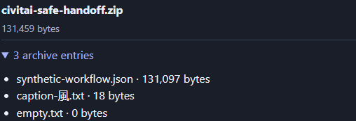
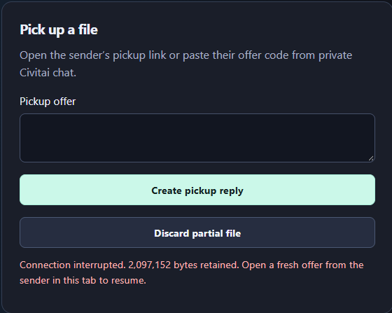
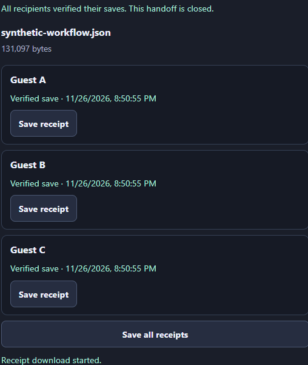
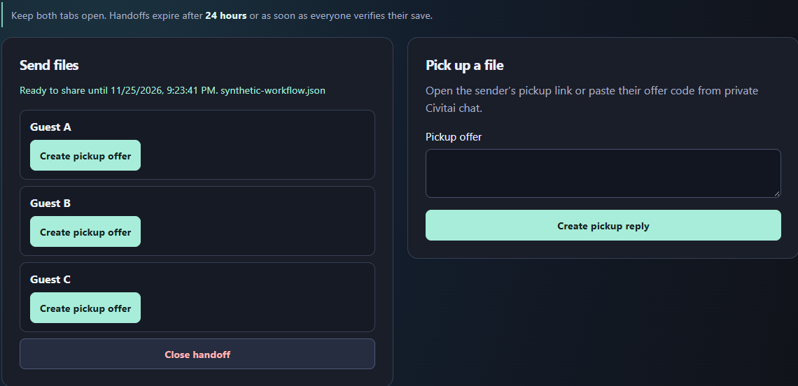
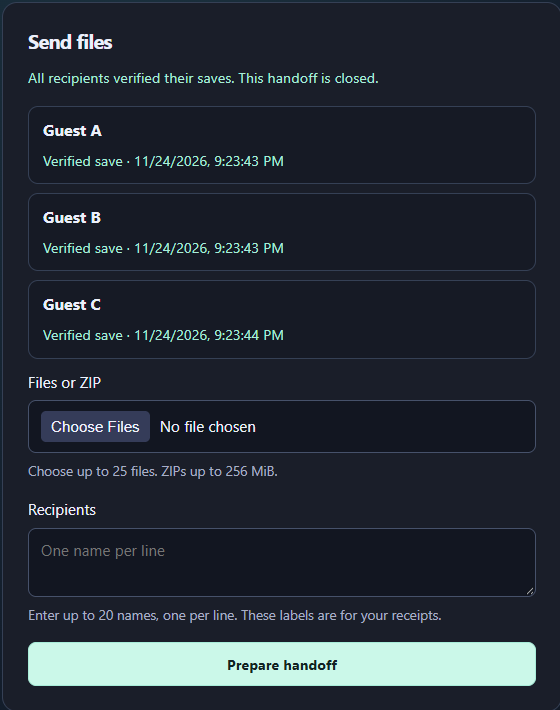

Live deployment verified · v0.4.0
Review SAFE Handoff.
Both Civitai catalogs point to the same App Block. The hosted HTML matches the submitted v0.4.0 page byte for byte.
Checked . The deployment record covers the listing and served build. The pickup tests below use a simulated Civitai host.
Browser test screenshots
These v0.4.0 screenshots use synthetic files and a simulated Civitai host. The browser tests cover ZIP preview, interrupted pickup, and verified receipt export.






Earlier v0.2.0 browser test screenshots





Check a handoff on Civitai
Use two eligible Civitai accounts and a network that allows the browsers to connect directly.
- Open the App Block in both browsers.Use Civitai.com and Civitai.red to test between the domains.
- Send a small JSON or text file.Exchange the offer and reply in private chat. Save the download and select it for verification.
- Check the final receipt.Verify that the last required save closes the handoff.
Test records
The browser fixture records include the app build, test inputs, saved digests and simulated 24-hour cutoff checks.
Platform permissions
The manifest requests zero account scopes. The App Block uses the native resource picker, the file save bridge, and the share or route hooks when the host provides them. Each user opens the app in a browser they already have.
GitHub Pages and the Wiki host project documentation and review materials. Live file transfers run in the Civitai app.